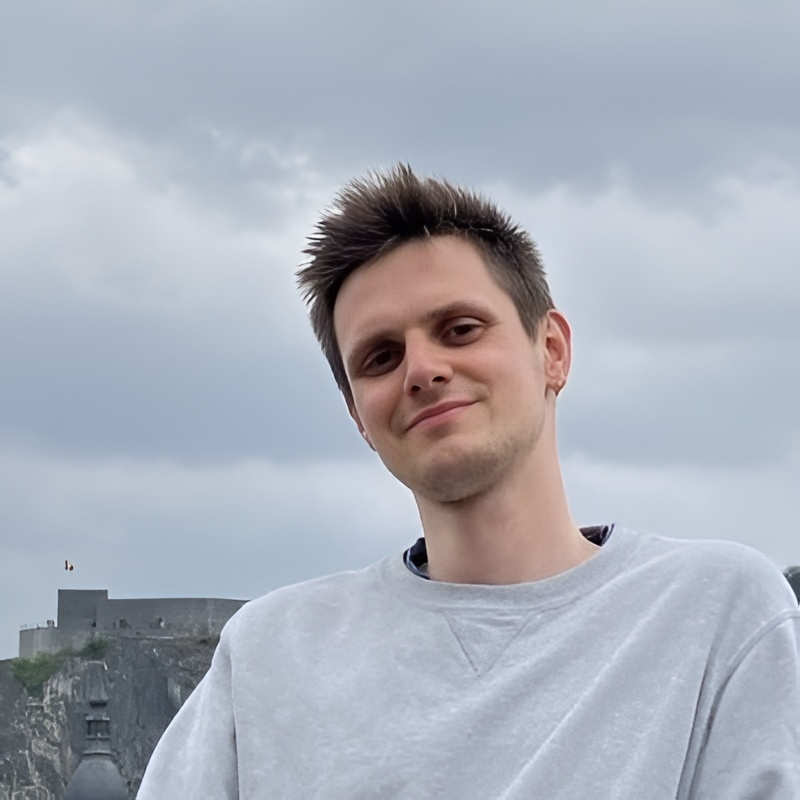

Ben Willebrords
Theoretical Physicist · KU Leuven

Hey! My name is Ben Willebrords. I am a researcher in theoretical physics at KU Leuven in Belgium. My research interests include non-equilibrium statistical mechanics, the origins of life, the evolution and thermodynamics of black holes, and the foundations of quantum mechanics.
In a previous life, I used to study philosophy, a period in my life that still has a substantial influence on my thinking. My philosophical interests include (in no particular order) the works of Immanuel Kant, Wilfrid Sellars, and Paul Feyerabend, the history and philosophy of science, the philosophy of mind, the philosophy of physics and mathematics, epistemology, and logic.
When I'm not thinking about exploding black holes, you can find me on the dance floor dancing salsa, jogging, going to trivia nights with friends, reading, or brushing up my coding skills.
I'm always interested in getting to know and collaborate with new people. If you feel the same, drop me a line!
Curriculum vitae
BA of Philosophy
2015 – 2019 · KU LeuvenGraduated cum laude. Thesis on the psychology and epistemology of the hard problem of consciousness.
MA of Philosophy
2019 – 2020 · KU LeuvenGraduated summa cum laude with congratulations of the Board of Examiners. Awarded the Mercier Prize for thesis on Kant's philosophy of mathematics, later published in Tijdschrift voor Filosofie.
Research & Teaching Assistant
2020 – 2021 · KU LeuvenInterdisciplinary research on bitstring semantics with applications in explainability and causality. Teaching assistant for Logic and Argumentation Theory.
Science Teacher
2021 – 2023 · Sint-Martinuscollege OverijseTaught physics, mathematics, and philosophy of science at secondary school level.
BSc of Physics
2021 – 2023 · KU LeuvenGraduated cum laude. Thesis on CO radio line shapes from AGB stars and on measuring the intensity and angular dependence of atmospheric muons.
MSc of Physics
2023 – 2025 · KU Leuven & LMU MunichGraduated magna cum laude. Erasmus+ stay at the Arnold Sommerfeld Center and Munich Center for Mathematical Philosophy. Thesis on the Schwinger effect in Reissner-Nordström-de Sitter spacetime.
PhD Researcher
2026 – present · KU LeuvenWorking with prof. dr. Christian Maes on non-equilibrium thermodynamics: the thermodynamics of black holes, E. coli locomotion, and the art of M.C. Escher.
My work
Publications
-
2025
The Nearby Evolved Stars Survey III. First data release of JCMT CO-line observations (opens in new tab) Astronomy & Astrophysics, 704, A276 (2025)
-
2022
On the foundational role of intuition in Kant's philosophy of mathematics (opens in new tab) Tijdschrift voor Filosofie, 84, 181–212 (2022)
Contact details
For contact, kindly send an email to .